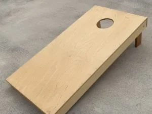
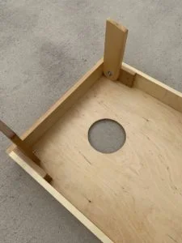
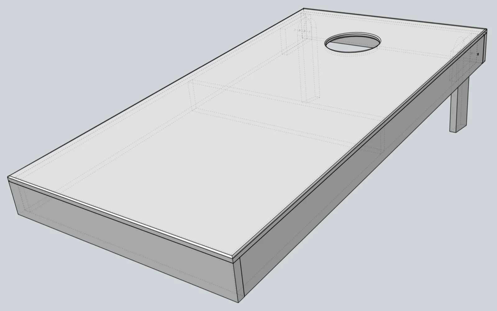
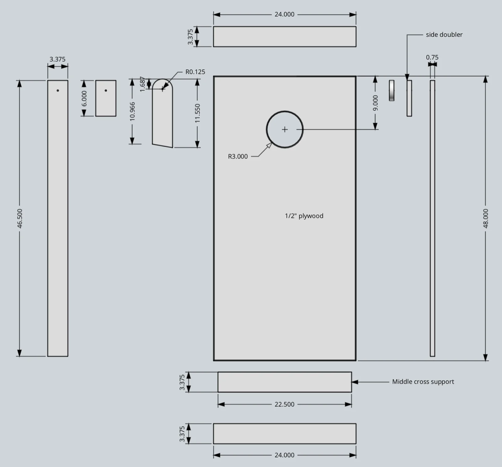

Cornhole Game Board
Includes the STEP file for the board and leg frame.
{kind=link}

A pair of foldable-leg cornhole boards, built from baltic birch and poplar with a spar-varnish finish. Free 3D CAD model available.
Cornhole is a really fun outdoor game for all ages. So I decided to build one to play with family and friends. The project is relatively easy to complete, and requires making two boards plus bean bags.
I used 1/2″ baltic birch for the top board (play surface) and poplar wood for the frame pieces. I decided to omit the center cross-section support that official rules typically require — the birch top proved sufficiently rigid on its own.
Supplies
Materials & Hardware
- 1/2″ baltic birch plywood (top board, play surface)
- Poplar (frame pieces)
- 1/4″-20 x 3″ carriage bolts, flat washers, and wing nuts (one set per leg)
Consumables
- Spar varnish
Tools
- Saber saw (hole cutout)
- Router, with template bit (hole edge rounding)
Pulled from the build notes below — quantities weren’t specified in the original write-up.
Construction Notes
I cut out the 6″ diameter holes using a saber saw and then used a router to round the edges. If I were doing this again, I’d make a 6″ diameter template using some MDF and then cut the hole using my router with a template bit — a cleaner, more repeatable method for a second board.
Each leg attaches with a 1/4″-20 x 3″ carriage bolt plus flat washer and wing nut, which lets the legs fold flat for portability. To set up, loosen the wing nuts, rotate the legs into position, and retighten.
I finished the boards with spar varnish. In hindsight, I’d lean toward a marine varnish instead — it offers better UV resistance for boards that’ll spend time outdoors.
Final Thoughts
For official cornhole dimensions and game rules, check the American Cornhole website — the downloadable CAD model here follows those standard board dimensions.
Image Gallery


